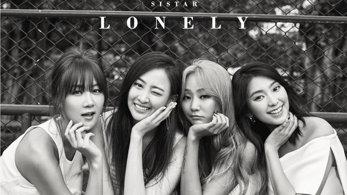

Sistar made their official debut with the song "Push Push" on 3 June 2010. Sistar had their debut performance on 4 June on Music Bank and continued promotions on various Korean music shows through 26 July. The group returned with their second single "Shady Girl" on 25 August. The music video featured Super Junior member Kim Heechul. The group received a lot of media attention when a fan-taken video was uploaded online showing the group filming their performance at "Let's Start Sharing Concert" on 28 August. During the middle of their performance, member Bora suddenly fell onstage, fracturing her thumb. Several minutes later, Bora returned to stage along with the other members to finish filming their performance. The video went viral on the internet and was featured on G4's online show Attack of the Show!, and an RTL Television news segment. The group released their third single, "How Dare You," in November. On 9 December the group attended the Golden Disk Awards and won the "Newcomer Award." On 27 December, Sistar won their first music show award for "How Dare You" on Music Bank.
On 27 April it was announced that Sistar would debut a sub-unit, Sistar19, with members Hyolyn and Bora. Their debut song, "Ma Boy", was released on 3 May. Sistar19 had their debut performance on 5 May and promoted throughout the month. Sistar returned on 9 August with their first studio album entitled So Cool. "So Cool" was the inaugural number one song on the Billboard Korea K-Pop Hot 100 chart after the chart's launch on 25 August. On 11 September Sistar won their first "Mutizen Award" on Inkigayo. In early April it was announced that Sistar was going to broadcast their "So Cool" comeback showcase globally in 41 countries. Their first mini album, entitled Alone, was released on 12 April and contained six songs produced by Brave Brothers. Their second mini album, Loving U, was released on 28 June. The mini-album contained the title track, "Loving U", produced by Duble Sidekick, one new song "Holiday" and remixes of the groups' past hits.

Sistar19 released their first mini album, Gone Not Around Any Longer, and the title track of the same name on 31 January 2013. Sistar's second studio album, Give It to Me, was released on 11 June with the title track of the same name. The album debuted at number four on Gaon Music Chart. Three more singles off the album: "The Way You Make Me Melt", "Crying" and "Bad Boy", as well as two promotional singles, were also released to promote the album. On 26 November, Hyolyn released her debut studio album Love & Hate, which reached number five on Gaon. On 21 July, Sistar released their third mini album, Touch N Move along with its title track "Touch My Body". EP was commercially very successful, peaking at numbers two and eight on Gaon and Billboard's US World Albums charts, respectively. Another single "Naughty Hands" was released in late July. On 26 August, Sistar released their fourth mini album and second summer special album titled Sweet & Sour, shortly after the promotions of "Touch My Body". EP contained two new songs "I Swear" and "Hold on Tight" and four remixes for singles "Loving U", "Gone Not Around Any Longer", "Give It to Me" and "Touch My Body". In December, Sistar won the Best Female Group Award at the 2014 Mnet Asian Music Awards.
On 22 June 2015, Sistar released its fifth mini-album, Shake It, along with its title track of the same name. It debuted at number three on Gaon, and two new singles - "Shake It" and "Don't Be Such a Baby" - were released in late June. In August, Hyolyn was confirmed to join the second season of Unpretty Rapstar. On 1 August, Sistar performed in Los Angeles, California at 2015 KCON. On 14 August, they performed at The 70th Independence Day of the Republic of Korea, their home country. On 7 September, Hyolyn released a free single, "The Wall Destroyer" featuring one of Eluphant's member, Keebee. On 22 September, Soyou collaborated with singer Kwon Jeong Yeol of 10cm. Their single is titled "Lean on Me."
